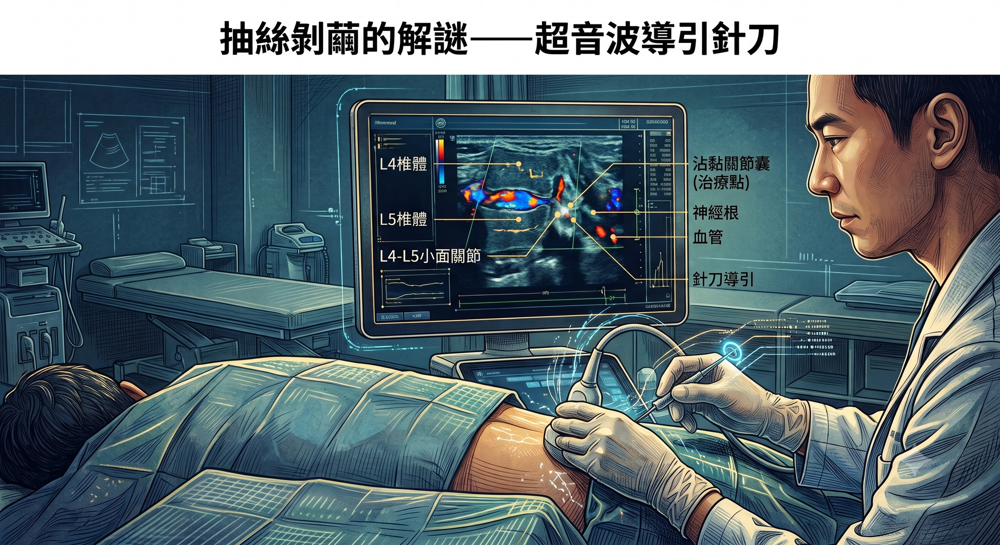

抽絲剝繭的解謎——從肌筋膜排查到「超音波導引針刀」的必要性
【 抽絲剝繭的解謎——從肌筋膜排查到「超音波導引針刀」的必要性 】
臨床上，經常會遇到一些「反覆發作、時好時壞」的頑固性痠痛。面對錯綜複雜的人體張力系統，最怕陷入「單一視角」的盲點，局部的痛點往往只是冰山一角。因此，完整的治療必須是一場嚴謹、層層排除的抽絲剝繭。
今天診間的這位患者，長期飽受右側臀部深處（約坐骨結節處）緊繃的困擾。只要久坐或是開車時間拉長，那股深層的緊繃感就會隨之報到。過去，他嘗試過各種局部的注射、針灸與針刀，但成效總是短暫，不久後症狀又會悄悄回到原點。
面對這樣難解又錯綜複雜的張力網絡，勢必要按部就班地進行拆解。
🔍 第一層排查：排除周邊肌筋膜的干擾
任何複雜的疼痛，都必須先從最基礎的可能性開始驗證。
初期的療程，針對最常見的「肌筋膜張力」進行排查。逐一處理了腰、臀與髖周圍的重點肌群，甚至是常被視為元兇的梨狀肌與腿後肌群。
然而，在這些常規的筋膜張力的修正後，症狀的改善幅度依然不盡理想。這個結果雖然沒有立刻解決問題，卻在「診斷」上給了我們極為明確的推進：周邊的緊繃只是代償的結果，真正的源頭隱藏在更上游的中軸結構。這讓我們能果斷排除淺層干擾，繼續往深處追查。
這種「處理周邊筋膜張力卻遇到瓶頸」的狀況，其實是身體在提示一個重要的訊號：真正的張力源頭，不在痛點周邊，而在更上游的中軸結構。
🔍 第二層鎖定：腰椎關節的曙光與「乾針的極限」
排除周邊肌筋膜後，將視角往上游推進，鎖定了「腰椎第四、第五節（L4-L5）的小面關節」。
在上一次的門診，以乾針介入腰椎旁的深層核心小肌群。這是一次極為關鍵的診斷性介入。
患者回饋，治療後的隔天，原本揮之不去的緊繃感竟完全消失，整天都感覺跟正常人一樣輕鬆。但可惜的是，這個美好的狀態只維持了一天。
這短暫的 24 小時無痛期，給了我最重要的線索，同時也點出了一個殘酷的事實：病根確實就在腰椎深處，但面對長年累積、已經嚴重沾黏的關節囊，單純的乾針針刺已經不夠力了，我們需要能實質切削並釋放空間的工具。
🎯 最終解鎖：超音波導引針刀：安全與精準的空間釋放
為了打破反覆發作的僵局，且提升治療的精準度與效益，需要透過用針刀來切削、劃開沾黏，直接針對腰椎小面關節與橫突周邊進行微創針刀鬆解，但腰椎深處滿佈著錯綜複雜的神經與血管，憑藉手感盲刺的風險極高。唯有透過『高解析度的超音波影像導引』，才能同時滿足「破壞重建」與「極致安全」的雙重需求。
在清晰的超音波螢幕畫面上，我們精準執行了以下任務：
無死角的安全性： 完美辨識並避開小面關節周圍的神經根與血管叢。
實體空間的釋放： 在直視下，精準切開沾黏的關節囊，徹底解除深層筋膜的空間限制，恢復其滑動性。
動態張力的修復： 針對深層小肌群的激痛點進行微創修復時，我們甚至能在影像中清楚看見肌纖維釋放張力時所產生的局部抽搐反應（LTR），確保緊繃被確實解開。
👨⚕️ 醫師的結構筆記
治療結束，患者從治療床起身的那一刻，原本盤踞在右臀底下的那股頑固緊繃感，當場消失無蹤。
這段「假設、排除、驗證、精準介入」的診療過程，正是人體解構張力最迷人的地方。單一視角的局部治療容易陷入盲點，唯有透過不斷地假設、驗證與修正，將中醫的針具技術與西方的超音波影像精準結合，才能真正解開身體錯綜複雜的張力謎團。
至於這次的深層鬆解能否為他帶來長期的穩定？我們將持續客觀地追蹤，期盼這次精準的張力結構解鎖，能真正為他畫下這個難解問題的休止符。
#臀部緊繃 #超音波導引 #小針刀 #脊椎小面關節 #肌筋膜 #中西並用 #全人診療 #精準醫療
太初中醫診所 東門中醫
中醫師 黃彥鈞
【 ⚠️ 醫療免責聲明與就醫提醒 】
本文分享之臨床案例已進行嚴格的去識別化與隱私保護處理。臀部深處緊繃與疼痛之成因繁多，可能涉及椎間盤突出、神經壓迫或骨盆結構失衡等複雜因素。若有相關症狀，請務必尋求具備合格執照之正規醫療院所，進行完整之理學、超音波或醫學影像鑑別診斷。超音波導引針刀與乾針治療屬於專業醫療處置，具備特定適應症，治療計畫與成效因個人體質而異，請與您的主治醫師進行充分討論。
